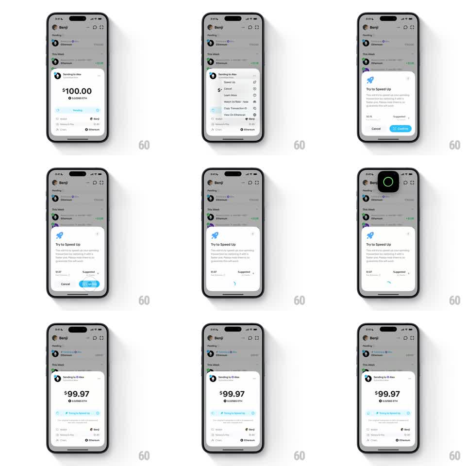

Media
Frame-by-frame

Rebuild this interaction 1:1: Family's speed-up pending transaction flow - on the light wallet home, tapping into a pending "Sending to Alex $100.00" sheet's context menu and choosing Speed Up raises a "Try to Speed Up" sheet (fee row, Cancel / blue Confirm); confirming births a green loading spinner in the top-of-screen island that morphs down into the sheet's transaction row as its new "Trying to Speed Up" state.

Rebuild this interaction 1:1: Family's speed-up pending transaction flow - on the light wallet home, tapping into a pending "Sending to Alex $100.00" sheet's context menu and choosing Speed Up raises a "Try to Speed Up" sheet (fee row, Cancel / blue Confirm); confirming births a green loading spinner in the top-of-screen island that morphs down into the sheet's transaction row as its new "Trying to Speed Up" state. ## Integration Integration: stack-agnostic spec - springs given as stiffness/damping, timed motions as duration + curve; map every value to your framework and animation library of choice. ## Scene Light wallet home (Benji header, pending Ethereum activity). Sheet 1: "Sending to Alex - Submitted 1 min ago", "$100.00 / 0.032955 ETH", blue "Pending" chip, context menu rows (Speed Up, Cancel, Learn More, Watch 0x7b8a...fa0a, Copy Transaction ID, View On Etherscan). Sheet 2: rocket glyph, "Try to Speed Up", explainer, fee row "$0.15 / Suggested" (later "$1.07"), Cancel / blue Confirm. Final state: sheet shows "$99.97" with a "Trying to Speed Up" progress row. ## Motion spec Pattern: spinner birth in the island, travel, and merge into the sheet's status row. - Tap Speed Up: the context menu collapses (150ms) and sheet 2 crossfades in place (200ms), the rocket glyph popping (scale 0.8 -> 1, spring ~340/16). - Tap Confirm: the buttons fade, a small spinner appears in the sheet, then a green ring spinner materializes inside the top island (scale 0 -> 1, spring ~320/18, 250ms) as the sheet slides down (250ms). - The green spinner drops from the island along an arc (300ms, ease-in-out) and lands in the reopened sheet's status row, morphing into the row's leading progress indicator (ring shrinks to 20pt, 200ms) as the amount updates ($100.00 -> $99.97, digit roll 250ms) and the row label crossfades to "Trying to Speed Up". - The row's progress text shimmers subtly (opacity 1 -> 0.5 -> 1, 1.2s loop). ## Calibration - The spinner is the same object throughout - island ring and row indicator share color, stroke width, and spin speed. - The island expansion is minimal: the ring fits the island's pill, no text. ## Reduced motion The spinner crossfades between island and row without the travel arc. ## Don't miss - The fee value in the Confirm sheet changes ($0.15 -> $1.07) before confirming - the suggested fee is live. - The amount drops to $99.97 after speed-up, reflecting the added fee.